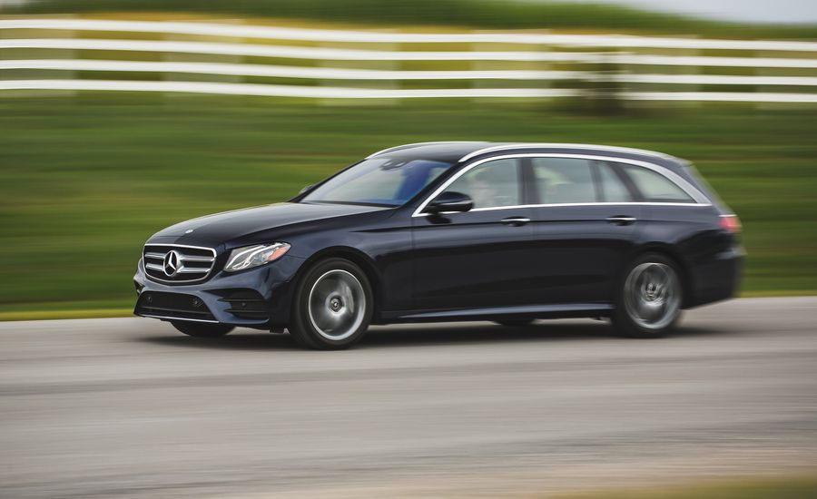

<!DOCTYPE html>
<html>
<head> 
<title>Kennedy Kabaso</title>

<link rel="stylesheet" type="text/css" href="mystyle.css">
<style>
 
</style>
</head>
<body>
<aside>

<h1><marquee>2018 Others Competitive Cars </marquee> </h1>

<h2>Porsche 718 Boxster  </h2>

<p>
WHAT WE LIKE: The combination of Porsche dynamics, 350 horsepower pushing a feathery 3090 pounds, and open-air romanticism continues to
 be one of our office’s great shared joys.   That’s true if you’re setting a blistering pace on a desolate back road or loafing through
 town on a Sunday cruise. With just over 32,000 miles on the odometer, our Porsche 718 Boxster S roadster continues to collect praise bordering on
 hyperbole from anyone who drives it. Senior Buyer’s Guide editor Rich Ceppos captured the consensus in a more measured voice after a weekend with 
our Boxster S. “This is one of the best cars Porsche builds,” he wrote in the Boxster’s logbook. “Not because it’s the fastest, or sharpest-steering, or has the most grip. But because it feels great while being effortless—so
 comfortable, so joyful—with a great ride despite the meaty 19-inch tires.”.Comparison Tests give consumers a better idea of how the competition stacks up. Click on our most recent 
Comparison Tests, or search by keyword above! .</p>

<h2>2018 Mercedes-Benz E-class Wagon </h2>

<p>
May just be the most well-rounded new car on the market. Quick, comfortable, luxurious, beautiful, and practical, it really does 
do it all—and with oodles of elegance and flair. The model has offered this rare combination of space and grace for decades, and the latest generation of the venerable E-class 
wagon, code-named S213 and introduced for 2017, fits into a long tradition of longroof excellence from the German automaker.</p>
</aside>
</body>
</html>